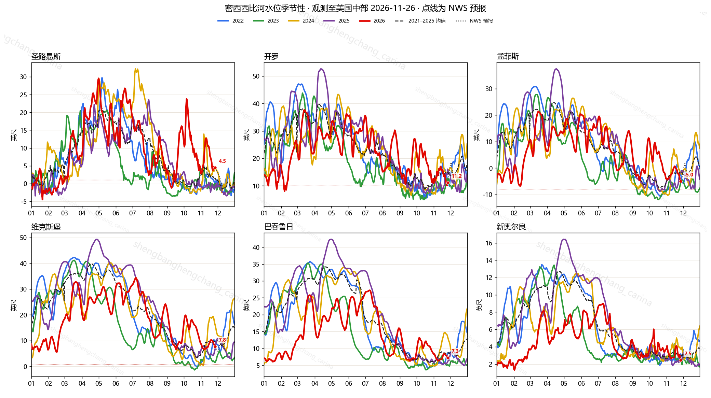
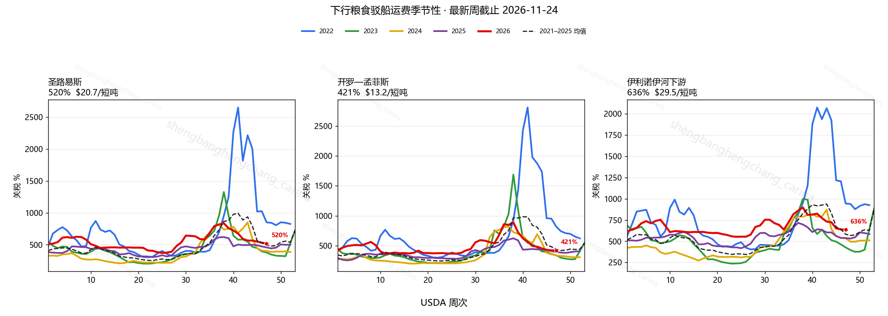

粮食驳船走廊 · 水位与运费
圣路易斯、开罗、孟菲斯、维克斯堡、巴吞鲁日、新奥尔良。水位观测为美国中部时间 2026-11-26 晚间（北京时间 2026-11-27 早晨）。驳船运费为 USDA 周度，最新一周截止 2026-11-24。
中下游水位仍季节性偏低，圣路易斯目前正常，但预报约 10 天后可能跌破减载参考。开罗、孟菲斯、维克斯堡、巴吞鲁日、新奥尔良（按近 24 小时均值）都低于 11 月 26 日历史第 25 百分位。开罗 12.13 ft，比低水阈值 10.3 ft 高约 1.8 ft，NWS 预报 12 月 2 日前后可升到约 18 ft，随后再度回落。
圣路易斯当前 4.47 ft，仍高于 1.0 ft 减载参考约 3.5 ft。NWS 预报路径持续下行，约在美国中部时间 12 月 7 日降到 1.0 ft 以下，12 月 10 日附近约 -0.7 ft。那会迫使粮食驳船减载，同一条船能装的玉米和大豆变少。
分档看美国中部时间 11 月 26 日的历史同期：低于第 25 百分位为偏低，25–75 为正常，高于第 75 百分位为偏高。水位是水尺读数（stage，英尺），不是水深。站与站之间不要直接比绝对值。新奥尔良有潮汐，表内用近 24 小时平均。
| 站点 | 当前水位 | 判断 | 同期对照（11-26） | 关键阈值 | 观测时间 |
|---|---|---|---|---|---|
| 圣路易斯St. Louis · USGS 07010000 / NWS EADM7 | 4.47 ft1.36 m | 正常第 45 百分位 | 中位数 4.74 ftP25–P75：2.62–11.59 ft 1996–2025，缺 2011 年，29 个样本 |
减载参考 1.0 ft仍高约 3.5 ft LWRP -3.2 ft · 警戒 28 · 洪水位 30 |
2026-11-27 09:00北京时间 美国中部 2026-11-26 19:00 · USGS 瞬时 |
| 开罗Cairo · 俄亥俄河河口 · NWS CIRI2 | 12.13 ft3.70 m | 偏低第 13 百分位 | 中位数 20.08 ftP25–P75：13.60–27.54 ft 1996–2025，30 个样本 |
低水阈值 10.3 ft高约 1.8 ft 警戒 32 ft · 洪水位 40 ft |
2026-11-27 08:00北京时间 NWS CIRI2 |
| 孟菲斯Memphis · NWS MEMT1 | -5.38 ft-1.64 m | 偏低第 10 百分位 | 中位数 3.77 ftP25–P75：-1.88–13.36 ft 1996–2025，30 个样本 负值来自水尺零点 |
低水阈值 -8.0 ftLWRP -8.3 ft，仍高约 2.6 / 2.9 ft 警戒 28 · 洪水位 34 |
2026-11-27 08:00北京时间 NWS MEMT1 |
| 维克斯堡Vicksburg · NWS VCKM6 | 7.64 ft2.33 m | 偏低第 23 百分位 | 中位数 13.91 ftP25–P75：8.66–22.86 ft 1996–2025，30 个样本 |
低水阈值 0.8 ft仍高约 6.8 ft 警戒 35 · 洪水位 43 |
2026-11-27 08:00北京时间 NWS VCKM6 |
| 巴吞鲁日Baton Rouge · USGS 07374000 / NWS BTRL1 | 6.82 ft2.08 m | 偏低第 18 百分位 | 中位数 10.17 ftP25–P75：7.28–15.45 ft 1997–2025，22 个样本 1998–2003 日值基本缺失 |
NWS 未公布低水阈值警戒 30 ft · 洪水位 35 ft NWS 同期 6.85 ft，本页用 USGS |
2026-11-27 08:15北京时间 USGS 瞬时 |
| 新奥尔良New Orleans（Carrollton）· NWS NORL1 | 2.64 ft近 24 小时平均 瞬时 1.81 ft |
偏低第 23 百分位 贴近 P25 |
中位数 3.65 ftP25–P75：2.67–4.79 ft 1996–2025 日平均，30 个样本 |
未公布低水阈值警戒 / 轻度洪水位 17 ft 瞬时低点来自潮汐，不单独作判断 |
2026-11-27 08:00北京时间 NWS 近 24 小时 |
三列两行：圣路易斯、开罗、孟菲斯、维克斯堡、巴吞鲁日、新奥尔良。红线是 2026 年，向前依次是 2025 紫、2024 黄、2023 绿、2022 蓝。黑色虚线是 2021–2025 年同日均值。灰色点线是 NWS 预报。最新观测点有数字。红色细点线是各站低水或减载参考（新奥尔良、巴吞鲁日没有公布低水阈值）。

最新一周（截止 2026-11-24）的下行粮食驳船运费处在收获季的季节性高位，但不是紧张年份。圣路易斯 520% 关税，约 20.73 美元/短吨，比 2021–2025 年同周均值 491% 高约 6%。开罗—孟菲斯 421% 关税，约 13.21 美元/短吨，比同周五年均值 444% 低约 5%。伊利诺伊河下游 636%，约 29.50 美元/短吨，比五年均值高约 9%。
2022 年同周圣路易斯曾到 850%、开罗—孟菲斯 821%。今年这一周远低于那一年。对美湾粮食出口，眼下运费抬高了内河段成本，但幅度还在近几年的收获季范围内，没有单独变成物流瓶颈。
需要分开看的是水位预报。这份运费是 11 月 24 日那一周的报价，还没有包含圣路易斯若在 12 月上旬跌破 1.0 ft 之后的减载。减载意味着同样的出口量要更多驳船、更多航次，运费往往在下一周才会跟上。开罗水位偏低但预报暂不破 10.3 ft 低水阈值，孟菲斯也还在低水阈值之上。
三列一行：圣路易斯、开罗—孟菲斯、伊利诺伊河下游。报价是 1976 年水道运价关税的百分比。美元/短吨 = 百分比 / 100 × 该段基准：圣路易斯 3.99 美元，开罗—孟菲斯 3.14 美元，伊利诺伊河下游 4.64 美元。红线是 2026 年，2022 年是蓝线（当年秋冬季冲到 2000% 以上）。黑色虚线是 2021–2025 年同周均值。

| 区段 | 截止 2026-11-24 | 美元/短吨 | 2021–2025 同周均值 | 相对五年均值 |
|---|---|---|---|---|
| 圣路易斯 | 520% | 20.73 | 491% | 高约 6% |
| 开罗—孟菲斯 | 421% | 13.21 | 444% | 低约 5% |
| 伊利诺伊河下游 | 636% | 29.50 | 582% | 高约 9% |
| 中密西西比 | 664% | 35.32 | — | 北段，冬季可能中断 |
| 双子城 | 694% | 42.96 | — | 北段，冬季可能中断 |